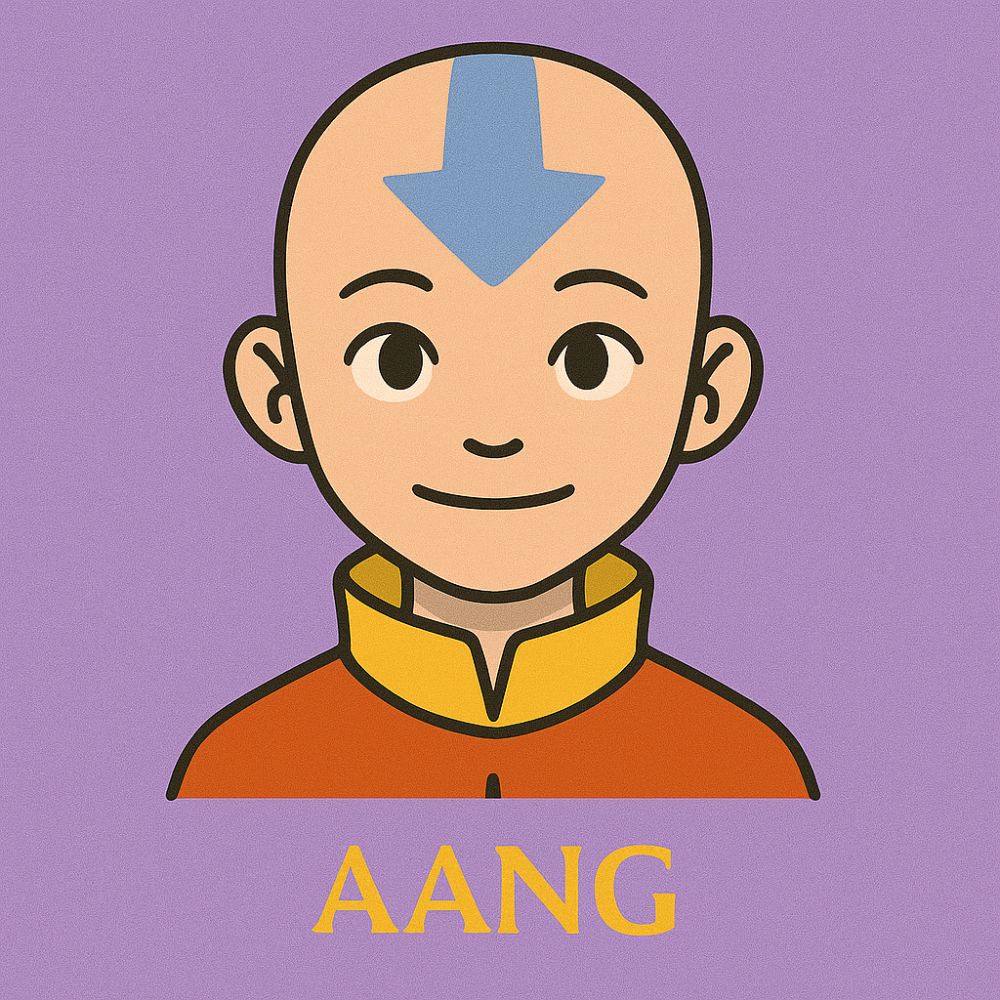

Aang
The weight of the world, carried with a smile.
Aang is the last surviving Airbender and the reluctant Avatar destined to bring balance to a world torn by war. Though burdened with immense responsibility at a young age, he approaches life with kindness, humor, and an unshakable commitment to peace. As a master of all four elements, Aang’s strength lies not just in his bending abilities, but in his unwavering belief that compassion can overcome conflict. His journey is one of growth, courage, and staying true to who he is, even when the world expects otherwise.